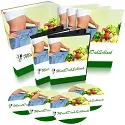

Hörgeschichten für Kinder: Schulzauber
Produktprofil · Marktplatz-Daten 2026-10-13 · Verkaufsseiten-Recherche 2026-10-13 · Kategorien: Health & Fitness, Personal Development, Family & Children
- Hörgeschichten für Kinder: Schulzauber ist ein/e Hörbuch (Download) in Health & Fitness und Personal Development, vertrieben über den Digistore24-Marktplatz von Anbieter kindimglueck, gelistet seit 2021-06-08.
- Listenpreis $26.02; Digistore24 meldet — Checkout-Konversion, — Stornierungsquote und 40 % Affiliate-Provision.
- Verdienst pro Verkauf (Affiliate): $10.41 (Anbieter-seitige Statistik, keine Prognose).
Interesse an Hörgeschichten für Kinder: Schulzauber? Aktueller Preis, Boni und Garantiebedingungen finden Sie auf der offiziellen Seite des Anbieters:
Offizielle Verkaufsseite ansehen
Affiliate-Link (Werbung) — wir verdienen ggf. eine Provision, ohne Mehrkosten für Sie.

Marktplatz-Daten
| Produkttyp | Hörbuch (Download) |
|---|---|
| Preis | $26.02 (Single payment) |
| Affiliate-Provision | 40 % |
| Garantie/Rückgabe | Laut Verkaufsseite des Anbieters — vor dem Kauf auf der offiziellen Seite prüfen |
| Anbieter | kindimglueck (gelistet seit 2021-06-08) |
| Marktplatz-Statistiken* | Checkout-Konversion — · Stornoquote — · Verdienst/Verkauf $10.41 |
* Anbieter-seitige Statistiken von Digistore24; sie hängen von der Traffic-Qualität ab und sind keine Prognose.
Marktplatz-Beschreibung des Anbieters
Infos für Affiliates: ZauberOhr erstellt liebevolle Hörspiele für Kinder, die ihr Selbstbewusstsein stärken und so für entspanntere Eltern sorgen. Unsere Hörgeschichten basieren auf langjähriger Erfahrung als Therapeutinnen und setzen direkt am Unterbewusstsein des Kindes an, so dass es spielerisch zu mehr Lebensqualität kommt. Produktbeschreibung: In dieser magischen Geschichte taucht dein Kind als Hauptfigur bereits heute in seine bevorstehende Schulzeit und die damit verbundene Vorfreude ab. Wir mobilisieren alle Ressourcen und geben stärkende und freudige Gefühle mit auf den Weg. Personalisierung empfohlen. Es gibt in dieser Geschichte eine interaktive Besonderheit für Eltern: Ihr könnt den Inhalt der Schultüte magisch werden lassen!
Von der Verkaufsseite des Anbieters
Seitentitel: Schulzauber - ZauberOhr
Meta-Beschreibung: In dieser magischen Geschichte taucht dein Kind als Hauptfigur bereits heute in seine bevorstehende Schulzeit ab. Die interaktive Besonderheit: Ihr könnt den Schultüteninhalt magisch werden lassen.
Hauptüberschrift
Schulzauber
0 Kommentare
Abschnitts-Überschriften
- Kommentare
- Weitere Hörspiele
Einstiegstext
Kathrin In dieser magischen Geschichte taucht dein Kind als Hauptfigur bereits heute in seine bevorstehende Schulzeit und die damit verbundene Vorfreude ab. Wir mobilisieren alle Ressourcen und geben stärkende und freudige Gefühle mit auf den Weg. Personalisierung empfohlen.
Es gibt in dieser Geschichte eine interaktive Besonderheit für Eltern: Ihr könnt den Inhalt der Schultüte magisch werden lassen!
Deine E-Mail-Adresse wird nicht veröffentlicht. Erforderliche Felder sind mit * markiert
Name, E-Mail-Adresse und Website in diesem Browser für meinen nächsten Kommentar speichern.
Recherche-Methode: rohes HTML · 551 Wörter · Qualität: rich · recherchiert am 2026-10-13. Vollständige Recherche-Datei (MD) ↗
Wie Produkte dieser Art geliefert werden
Allgemeiner Hinweis zu diesem Produkttyp (keine anbieterspezifische Anleitung): Hörbücher werden direkt nach dem Checkout als digitaler Download (MP3) geliefert — auf jedem Gerät abspielbar. Für die genaue Anwendung von Hörgeschichten für Kinder: Schulzauber sind die offizielle Verkaufsseite und die enthaltenen Materialien maßgeblich.
Gut zu wissen
- Keine Garantie-Formulierung in unserer Recherche gefunden — bestätigen Sie das Rückgabefenster auf der offiziellen Seite, bevor Sie kaufen.
- Marktplatz-Zahlen (Preis, Provision, Konversion, Stornoquote) — Quelle: offizielle Digistore24-Marktplatz-API (Affiliate-Sicht), Stand 2026-10-13. Gegenprüfung: Marktplatz-Suche nach Produkt-ID 393341.
- Verkaufsseiten-Zitate — Quelle: https://zauberohr.de/geschichte/schulzauber-hoerbuch-einschulung-kind/, abgerufen 2026-10-13 (Methode: rohes HTML). Verify: offizielle Seite öffnen.
- Garantie / Rückgabe — vom Anbieter festgelegt; vor dem Kauf auf der Verkaufsseite bestätigen.
- Nicht von uns geprüft: Produktqualität, Ergebnisse, Testimonials — kein Praxistest für dieses Listing durchgeführt.
Häufige Fragen zu Hörgeschichten für Kinder: Schulzauber
Antworten aus dem Marktplatz-Snapshot (2026-10-13) und der Verkaufsseiten-Recherche (2026-10-13); Anbieteraussagen sind inline gekennzeichnet.
Was ist Hörgeschichten für Kinder: Schulzauber?
Hörgeschichten für Kinder: Schulzauber ist ein Angebot des Typs „Hörbuch (Download)" im Digistore24-Marktplatz, Anbieter: kindimglueck, gelistet seit 2021-06-08. Eingepflegt unter Gesundheit & Fitness und Persönlichkeitsentwicklung. Digistore24 wickelt Checkout, Lieferung und Rückgaben ab.
Wie viel kostet Hörgeschichten für Kinder: Schulzauber?
Der Digistore24-Marktplatz listet es für $26.02 (single payment). Preise legt der Anbieter fest und können sich ändern — der Marktplatz-Eintrag oben zeigt den Schnappschuss; die offizielle Verkaufsseite zeigt den aktuellen Preis.
Gibt es eine Geld-zurück-Garantie für Hörgeschichten für Kinder: Schulzauber?
Unsere Verkaufsseiten-Recherche hat keine explizite Garantie-Formulierung gefunden. Viele Digistore24-Produkte bieten 60 Tage Geld-zurück, aber das legt jeder Anbieter selbst fest — bestätigen Sie es auf der offiziellen Verkaufsseite, bevor Sie kaufen.
Ist Hörgeschichten für Kinder: Schulzauber seriös?
Wir bewerten keine Seriosität — wir veröffentlichen überprüfbare Zahlen: Anbieter kindimglueck (gelistet seit 2021-06-08), Checkout-Konversion —, Stornoquote —, Affiliate-Verdienst/Verkauf $10.41 (alles Anbieter-seitige Marktplatz-Statistiken). Lesen Sie unsere 6-Punkte-Bewertungsmethode und entscheiden Sie anhand der Zahlen — oder diskutieren Sie Hörgeschichten für Kinder: Schulzauber auf GitHub.
Wo kann ich Hörgeschichten für Kinder: Schulzauber sicher kaufen?
Nur über die offizielle Verkaufsseite, die auf dieser Seite verlinkt ist (Checkout und Rückgaben laufen über Digistore24). Prüfen Sie dort Preis und Garantie vor der Bestellung. Der Link ist ein Affiliate-Link — der Kauf unterstützt diese Website ohne Mehrkosten für Sie.
Wie erhalte ich Hörgeschichten für Kinder: Schulzauber nach der Zahlung?
Der Checkout läuft über Digistore24: Nach der Zahlung erhalten Sie Ihren Zugang oder Download per E-Mail und in Ihrem Digistore24-Kundenkonto. Lieferdetails für diesen Produkttyp: Hörbücher werden direkt nach dem Checkout als digitaler Download (MP3) geliefert — auf jedem Gerät abspielbar. Bei Problemen kann der Digistore24-Käufersupport Ihre Bestellung wiederherstellen.
Alle 50 Käuferfragen zu Gesundheit & Fitness — das komplette Kategorie-FAQ.
Hörgeschichten für Kinder: Schulzauber auf Reddit diskutieren
In Community-Threads vergleichen echte Käufer Erfahrungen. Wir verlinken Communities, keine einzelnen Posts — Threads verschwinden, Subreddits bleiben:
- r/FITNESS — deutschsprachige Community mit Diskussionen zu health & fitness.
- Reddit-Suche nach „Hörgeschichten für Kinder: Schulzauber" — Live-Ergebnisse, von uns nicht beeinflusst.
- Top-„Erfahrungs"-Treffer dieses Jahr — selbst nach Aktualität filtern.
Passendes auf Amazon.de
Physische Produkte und Zubehör, die häufig zusammen mit Hörgeschichten für Kinder: Schulzauber gekauft werden:
- Nahrungsergänzung auf Amazon.de — Top-Ergebnisse, Amazon-Ranking.
- Bestseller: Nahrungsergänzung — live Liste von Amazon, von uns nicht kuratiert.
Werbung: Als Amazon-Partner verdient DigistorePicks DE an qualifizierten Käufen (Partner-tag adminstorede-21). Amazon setzt eigene Preise und Provisionen (niedrige einstellige Prozente — weit unter den 30–75% der Digistore24-Anbieter). Amazon ist ein Convenience-Angebot für Sachprodukte, kein Ersatz für das digitale Produkt oben.
Ähnliche Angebote in Gesundheit & Fitness

Eine vollständig strukturierte, medizinisch fundierte Online-Ausbildung zur Vorbereitung auf die Heilpraktikerprüfung – mit klarem Curriculum, systematischem Au

Online Ausbildung zum Holistic Skin & Health Expert, staatlich Zugelassen mit Abschlusszertifikat ( 6 Monate) Werde zertifizierter Holistic Skin & Healt

1:1 Online Training per Video Mentale Klarheit auf Knopfdruck – mitten im echten Leben. Stell dir vor, du könntest deinen Fokus, deine Gelassenheit und deine Wa

bis zu 10% Provision | 600.000€ Umsatzpotenzial für 2026 Marktplatz-Beschreibung Sichern Sie sich Ihren Anteil am Erfolg: Wir suchen exklusive Partner für ein 6
Weitere Angebote von kindimglueck

Infos für Affiliates: ZauberOhr erstellt liebevolle Hörspiele für Kinder, die ihr Selbstbewusstsein stärken und so für entspanntere Eltern sorgen. Unsere Hörges
Hörgeschichten für Kinder: Schulzauber ist auch gelistet in
Persönlichkeitsentwicklung (711 Produkte) · Familie & Kinder (268 Produkte)
Ähnliche Preislage in Gesundheit & Fitness

Verstehe dein inneres Kind ist ein psychologischer Minikurs, der den Teilnehmern beibringt: welche Kindheitsprägungen es gibt wie diese in der Kindheit entstehe

Das Mach dich schlank Programm über VSL Natürlich, gesund und nachhaltig abnehmen, das ist unser Mach dich schlank Programm. Hierbei werden die Basics einer ges

733993 - Männliche Potenz – 30-Tage-Programm MÄNNLICHE POTENZ – 30-TAGE-PROGRAMM Ein digitales 30-Tage-Programm für Männer, die mehr Struktur in ihren Alltag br

Ein visuell hochwertiges digitales Produkt für eine große, gesundheitsbewusste Zielgruppe: „Detox Smoothies für jeden Tag“ ist eine umfangreiche Rezeptesammlung
Ähnliche Suchanfragen
Wo Sie es sich ansehen können
Wo Sie es sich ansehen können
Aktuelle Preise, Garantie und Boni finden Sie auf der offiziellen Verkaufsseite:
Offizielle Verkaufsseite ansehen
Das ist ein Affiliate-Link (Werbung) — kaufen Sie darüber, verdienen wir ggf. eine Provision, ohne Mehrkosten für Sie.
Quellen & weiterführende Informationen
- Offizielle Verkaufsseite (aktueller Preis, Garantie, Boni): zauberohr.de/geschichte/schulzauber-hoerbuch-einschulung-kin (Affiliate-Link)
- Öffentliche Digistore24-Produktseite: checkout-ds24.com/product/393341
- Vollständige Recherche-Datei (Markdown, versioniert): content/products/46366-h-rgeschichten-f-r-kinder-schulzauber.md
- Affiliate-Supportseite des Anbieters: zauberohr.de/partnerprogramm/
- Marktplatz-Kategorie: Gesundheit & Fitness
Wie wir Produkte wie Hörgeschichten für Kinder: Schulzauber bewerten
Sechs Prüfungen, ausschließlich mit offiziellen Marktplatz-Zahlen. Die vollständige Bewertungsmethode lesen · unsere Recherche-Standards & Kennzeichnung.
Fragen oder eigene Erfahrungen mit Hörgeschichten für Kinder: Schulzauber?
Praxis-Tests veröffentlichen wir erst, nachdem wir ein Produkt selbst gekauft haben — aber Ihre Erfahrung hilft anderen Lesern: Diskussion zu Hörgeschichten für Kinder: Schulzauber auf GitHub starten/verfolgen. Falsche Zahl gefunden? Korrektur melden — jede Seite zeigt ihre Datenstände, Korrekturen gelten für die ganze Website.